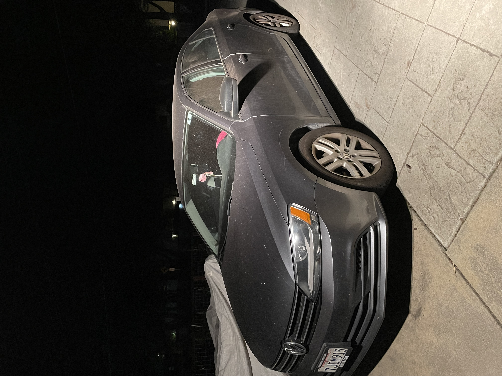

Honestly we didn't have too many challenges with the javascript. I think this last part where we have to tie it all together is going to be the most difficult. That's why this week we each decide to make our own websites opposed to using teletype. That honestly made this process way more complicated.
Getting the script to show up on the webpage has been the most challenging part so far. Everyone seems to be having difficulty getting that to work. We finally got it though. The part that threw me off was that writeln in the code was a lowercase l and not a capital I. Also I ended up changing my java file name to lab5 but taking out the 5 threw us off for a while as well.
In the end our results are nice. We got our javascript to work, which we were unsure for a while if we'd be able to get that part. Luckily though Angela caught the differences in the code and was able to get it to work for us.
